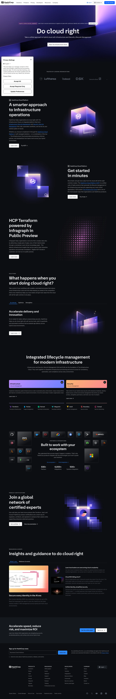

HashiCorp 主题
HashiCorp 的 Design.md 主题展示，围绕开发工具、媒体内容、B2B 产品、企业服务组织页面。
Infrastructure automation. Enterprise-clean, black and white.
开发工具媒体内容B2B 产品企业服务运营监控运营系统数据仪表盘SaaS 产品浅色界面效率工具专业工具

来源
- 来源
- getdesign.md
- 镜像
- github:VoltAgent/awesome-design-md
- 网站
- https://hashicorp.com/
- 详情
- https://getdesign.md/hashicorp/design-md
色板
#000000: #000000#12b6bb: #12b6bb#ffffff: #ffffff#2b89ff: #2b89ff#b2b6bd: #b2b6bd#656a76: #656a76#15181e: #15181e#1f232b: #1f232b#3b3d45: #3b3d45#252830: #252830#7b42bc: #7b42bc#911ced: #911ced
字体
display: hashicorpSansbody: hashicorpSansmono: ui-monospacehints: hashicorpSans,ui-monospace,Geist,IBM Plex Sans,Inter
圆角
control: 8pxcard: 12pxpreview: 16pxpill: 9999pxsource: design-md
间距
hair: 1pxxxs: 4pxxs: 8pxsm: 12pxmd: 16pxlg: 24pxxl: 32pxxxl: 48pxsection: 96pxsource: design-md
使用建议
建议
- 建议：Reserve {colors.canvas} (black) and {colors.surface-1} (charcoal) as the system's two anchor surfaces. Every band of the page is one or the other。
- 建议：When introducing a section about a specific HashiCorp product, use that product's {colors.product-*} token consistently — for the section pill, the CTA button, and (where appropriate) the showcase card background。
- 建议：Use {rounded.md} 8px on CTA buttons; HashiCorp's brand reads as engineered, not consumer。
- 建议：Pair tight display line-heights (1.17–1.21) with relaxed body line-heights (1.50–1.71). The contrast IS the brand voice。
- 建议：Use the eyebrow typography ({typography.eyebrow}, uppercase, 0.6px tracking) above every meaningful section。
避免
- 避免：ship a light-mode marketing page. HashiCorp's marketing brand IS dark。
- 避免：introduce mid-tone gray text outside the documented {ink} / {ink-muted} / {ink-subtle} set。
- 避免：square off CTA corners — use {rounded.md} 8px, not 0px。
- 避免：use a product accent color for a CTA on a page that isn't about that product. Terraform purple on the Vault page is a brand violation。
- 避免：combine multiple product accents in the same viewport — the system says "this section is about THIS tool", and mixing accents breaks that signal。
查看 DESIGN.md